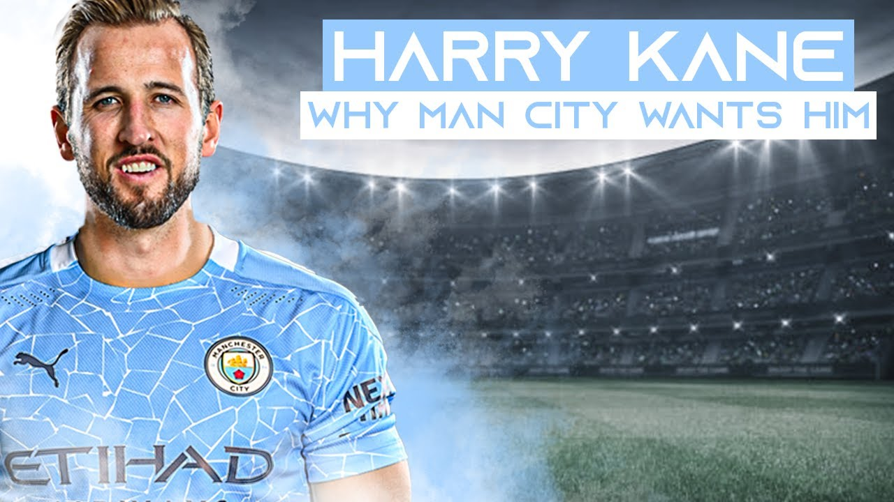
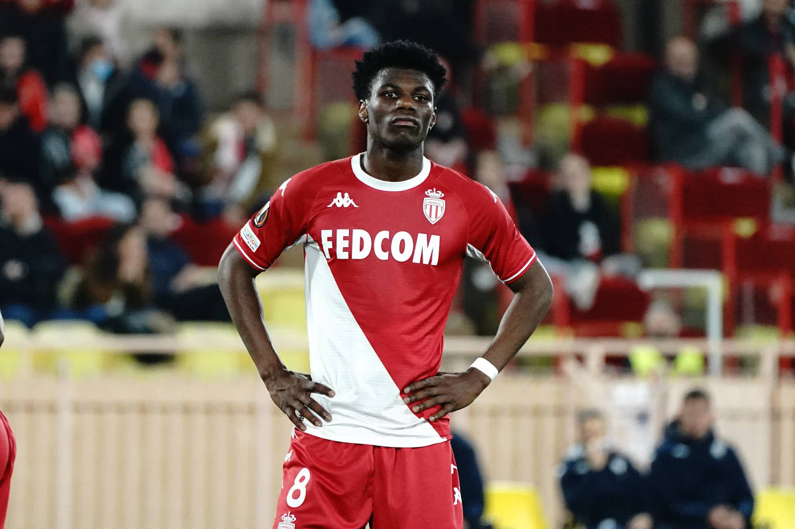

Linked Players
 Why Man City are looking for this type of Player Profile:
Manchester City are still in the market for a Striker and Harry Kane perfectly suits Guardiolas ideal Striker who can drop deep and help out the rest of the attack. 36 year old Fernandinho will leave Man City at the end of the season and they need a new holding midfielder to replace him, Manchester City are looking at the young French prospect Tchouameni to replace him.